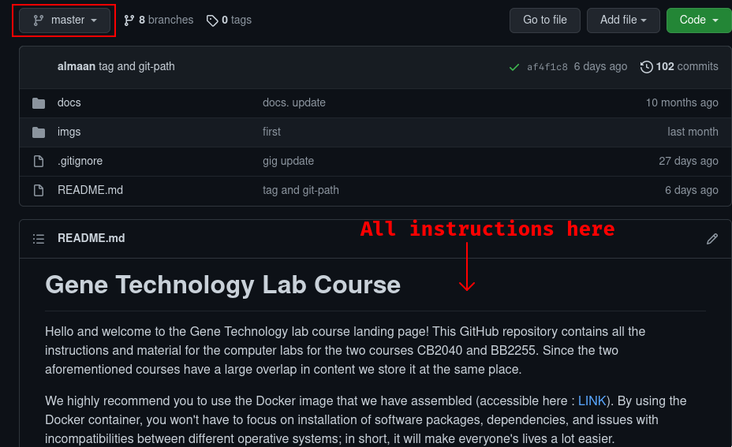
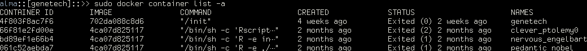
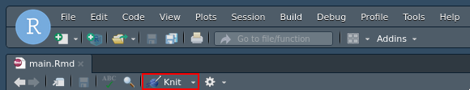

CB2040 Lab Prep
Alma Andersson
Created: 2021-09-09 Thu 15:12
Lab course Introduction
For these slides: https://almaan.github.io/genetech/
Teaching assistants
There are 4 of us:
- Alma Andersson (almaan@kth.se)
- Ludvig Larsson (ludvig.larsson@scilifelab.se)
- Sami Saarenpää (sami.saarenpaa@scilifelab.se)
- Trang Le (trangle@kth.se)

A word on emails
Emails are welcome, but hands-on help with the exercises will mainly be limited to the lab sessions. You can also reach us on Canvas, but slower response times.

NOTE: Tag emails with [CB2040] in the subject line.
For example: "[CB2040] Question about lab 2"
Today
- Course structure, formalities, access to information, grading and deadlines
- Overview of tools/software
- Installation of tools and software
- Question time!
Course Structure
In this course 4 labs in total, one "main TA" for each:
- Introduction to R [Alma]
- Bulk RNA-seq analysis [Sami]
- Single Cell RNA-seq analysis [Ludvig]
- Spatial Transcriptomics analysis [Alma]
All labs are in R, we assume that you have:
- access to a computer
- (zoom installed)
- no prior knowledge of R
- some familiarity with the terminal
Formalities
Workflow:
- Labs are written in R markdown (more on this later)
- Download exercises –> modify files in-place –> hand in modified file
- You hand in the modified file via Canvas
- The labs are P/F
Deadlines:
- Hand-in: 1 week after scheduled lab session
- Grading : 1 week after hand-in deadline
- Revision : 1 week after grading deadline
NOTE: Late reports will be corrected, but you will get a set of additional exercises to solve. An incomplete report is also considered late.
Working in pairs?:
- Strongly Encouraged to work alone
- Helping each other out is also encouraged!
- Pairs are ok, but remember pair = 2 people
- Hand in identical copies
- State both names in : file and comments
Finding Information
All information you need can be found at:
https://github.com/almaan/genetech
- I will refer to this as "the course repo".
- Bookmark or save the link, we will be using it today
- All information is there
A word about zoom
- Make sure you have the latest version : download
- We will have a zoom room open in case you are sick or can't make it
R
What?
- Programming language for "statistical computing"
- Released in 1993
- Open Source –> we like free stuff!
- More than 15,000 additional packages! (add-ons)
- Interpreted language –> very easy to work with!
-
Example C++ : Compiled language
std::vector<double> vec1 = {1,2,3,4}; std::vector<double> vec2 = {5,6,7,8}; double prod = 0; for (int i = 0; i<= vec1.size(); i++){ prod += vec1[i]*vec2[i]; }
Example R : Interpreted language
vec1 <- c(1,2,3,4) vec2 <- c(5,6,7,8) prod <- vec1 %*%vec2
Why?
- One the most popular languages within the bioinformatic community
- Extremely well designed for "data wrangling"
- Has a huge ecosystem of packages for bioinformatic analysis
- Superior graphics system (
ggplot) - don't underestimate this… - Often requested that PhD and job applicants know one of
PythonorR.
Rstudio
What is it?
- When editing code it's common to use an IDE (Integrated Development Environment)
- This is like a "Microsoft Word" for code
- IDEs are designed to facilitate programming; there are plenty of them
- Personal favorite is Emacs (first release 1976)
- We will be using Rstudio
- an IDE specifically designed for R
- also very user friendly
- In short, Rstudio is the tool you will be using to edit your code.
- Remember, just as "Miscrosoft Word ≠ English", Rstudio ≠ R
Features of Rstudio
- Create a new file by: File –> New File –> R Script
- You should see something like this:

- There are some key features I want to point out: Source, Console, Terminal, and Environment
- One more feature (knitting) that I will come back to
GitHub
What?
- All lab material is hosted at GitHub (the course repo).
- Git is a system for distributed version control
- GitHub is one (nice) remote hosting service when using git
- GitHub is widely used among bioinformaticians, computational biologist and software developers.
- I host all my software there

How::Clone labs from GitHub
- Clone repo : [Course Material] Online –> Local
- Go to a folder where you want to save your files
- We call the path to this folder
GENETECH_PATH
- We call the path to this folder
- Make a new folder called
genetechinGENETECH_PATH cdinto thegenetechfolder and do:
git clone https://github.com/almaan/genetech.git codecdinto the (newly cloned)codefolder and do:
git checkout cb2040<– this puts you on the right branch
Docker
What?
- Open source containerization platform
- Allows you to bundle up OS, programs, packages, and whatever into an image that you can share
- Like a portable OS, more robust and lightweight than Virtual Machines
- Enables:
- Reproducibility (IMPORTANT)
- Sharing of analysis workflows
Why?
- Previous years we've spent a lot of time on installation and software issues
- You don't think it's fun, we don't think it's fun
- Using Docker, we minimize the risk of these issues
- Focus on learning material rather than install
- I have created a Docker environment with all
Rpackages andrstudio - Commonly used in research, good to be familiar with
How::Download Docker?
- Go to the GitHub course repo : link
- Pick the master branch

- Download and install Docker
- To test if successful, in terminal do:
docker ps
How::Download Docker Image?
- Download the docker image (we will create a container from this)
docker pull almaand/genetech:TAG
- Check if successful with the command:
docker images
How::Build container and run Docker
- Build your container and bind your
genetechto a volume:
docker run -d -p 1337:8787 --name genetech -e USER='genetech' -e PASSWORD='genetech' --memory=6g --mount type=bind,source=GENETECH_PATH,target=/home/genetech/code -e ROOT=TRUE almaand/genetech:TAG - Check if successful with:
docker container ls -a- You should see a container called
genetech
- You should see a container called
How::Access rstudio
- Having started a genetech container
- Go to your favorite browser and enter:
localhost:1337 - You will be prompted for credentials:
- Username: genetech
- Password: genetech
- You can only open files that are in mounted folders
How::Start and stop a container
- To stop a running contianer do:
docker stop CONTAINER_ID - To start a running contianer do:
docker start CONTAINER_ID

The Labs
- Information at course repo, select branch
CB2040 - All the labs are found in the repo we cloned before
- Subfolders named
exY,Y = {1,2,3,4}indicating which lab
- Subfolders named
- You work with the
labs/exY/main.Rmdfiles- Contains instructions and chunks to insert answers into
- You hand in a knitted version of these files
- We've mounted this folder to the Docker container
We've also installed all of the necessary packages for you

Working with the code
To get an idea of how you work with the code, we will have a look at Lab 1
- Go to Rstudio (in browser –>
localhost:1337) - Do: File–>Open File
- Choose the file
/home/code/labs/ex1/main.Rmd
Changing author name
At the top of the file you will see:
--- title: "Lab 1 - Introduction to R" author: "Alma Andersson" date: "17-09-2021" output: tufte::tufte_html: default ---
Change the author field to your name(s)
Code chunks
{r,eval = TRUE, echo=TRUE} # bind the values 1337 to the variable fancy_name_1 fancy_name_1 <- 1337 # print fancy_name_1 print(sprintf("fancy_name_1 is : %d",fancy_name_1))
- The "boxes" with code are called chunks.
- If you "run" a chunk (press green arrow) the code inside will be executed
- This is where you will put in code (when prompted)
- Don't change the settings (in curly brackets)
Knitting
- R markdown –> html and pdf documents.
- This process is called knitting
To knit your document, press the yarn symbol that says "Knit"
- Your rendered document should show up in the "Viewer" pane
- You should always hand in a knitted report (html)
- If your document does not knit successfully, something is wrong.
Wrap up
- First lab session: 08:00-13:00, 2021/09/17
- Questions are welcome!
- We will hang around a bit after this session.